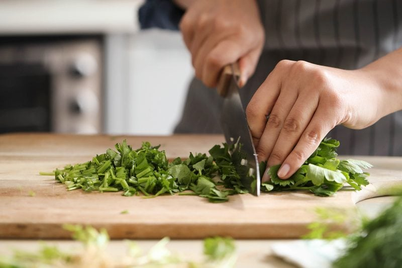
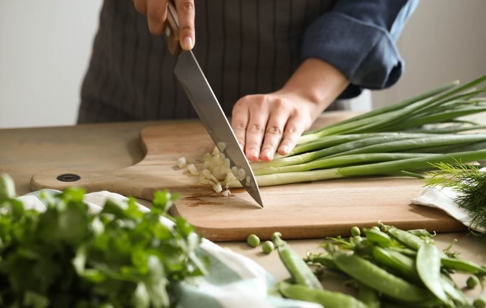
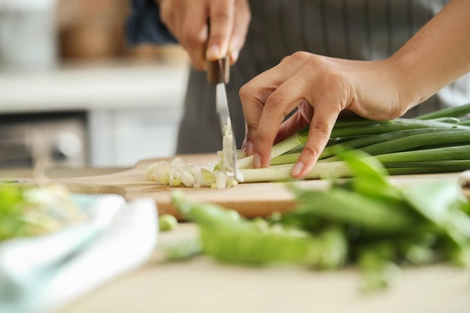
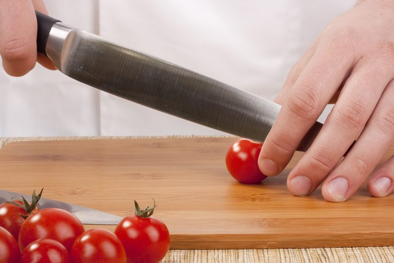

#3 – How to Grip a Chef’s Knife
It may seem odd, but before you start preparing food in the kitchen, before wielding a knife in your hand, take a moment to ground yourself. Become present and get a grip (pun intended). If there is chaos around you (kids running, dogs barking, your husband has a cold, etc.), take a moment to calm the situation before picking up the knife. Being flustered and distracted can lead to injury.

So yea, Get a Grip!
So what’s the best way to grip your knife? There are many different ways in which you will witness someone holding a knife. It’s sort of like holding a pen or pencil, not everyone holds them the same way or even with the same hands. Frankly, the best grip is one that makes you feel the most comfortable and secure. It will also depend on what type of knife you are using as well as what you are cutting.
With that being said, there are some helpful tips that you should practice for safety reasons. Plus, where and how you hold your blade determines your level of control, which will build your confidence. Today, we are going to talk about a chef’s knife since this is the most common knife used in the kitchen. Most of the techniques acquired here will carry over to other knives.
Gripping a Chef’s Knife
Pinch Grip
- With your hand wrapped around the handle, up near or on the bolster, pinch the blade between your curled index finger and your thumb, wrapping your three back fingers around the handle.
- Note that you should be gripping the knife primarily with the thumb and forefinger. If you find that you’re tightly clutching the entire handle of the knife, relax and redistribute the pressure points to the correct places.
- The bolster gives the knife balance and helps to keep your hands from slipping over the handle onto the blade. Holding the knife there will help give you more control than gripping the handle itself.
- This position gives you a lot of power, precision, and control.
- This position isn’t the best for brute force jobs, but it is ideal for precise chopping.

PHOTO ABOVE – HAND POSITION NOT RECOMMENDED! The fingertips are lined up perfectly for a disaster.
Finger Grip – only with soft foods
You may witness someone using this technique where the forefinger is perched along the spine of the knife with the rest of the hand wrapped around the handle. The problem with this position is that there isn’t much stability from side to side with this grip, which means that if that top finger slips off of the knife, it could end up on the cutting block. If you are in the habit of holding the knife this way, try to undo that habit so you can pass on the right technique to those who watch you in the kitchen.
If you are dead set against changing your ways, only use this technique if you are cutting softer foods. If you hold your knife this way when slicing hard root veggies, you are at risk of sliding off of the vegetable and cutting yourself. So be cautious and aware of what you are cutting.
Secure the Food With the Guiding Hand
Now that you know how to hold a knife in one hand, we need to assign a task to the other hand. It plays just as an important role as the cutting hand, it nudges and stabilizes the ingredient being cut to maximize safety and efficiency.
The guiding hand works in harmony with the knife-hand. Not only does it stabilize the food, but it also helps control the size of the cuts. Listen, fingertips are the prime target for the edge of a knife. Learning proper knife skills helps ensure safety in the kitchen, keeping food, not fingers, on the chopping block.
For a quick visual of what the guiding hand will be doing, hold your hand up in front of you, curl your fingers back, so all the tips are tucked. Now turn your hand, palm facing down, and place it on the countertop. That is what is called “The Claw.” We will use the position of this hand to prevent foods from slipping away from the knife.

In the photo above, you can see that the fingertips are about 1/2″ from the blade and they aren’t properly curled under… this could lead to nicking the fingertips with the blade if you get distracted. The basic hand potion is ok, but to get that claw look, tuck those fingers under a tad more and cut with the blade resting on knuckles.
The Claw – hand position
- When cutting foods, always place them in a stable position, preferably with a cut surface flat against the cutting board.
- If slicing round or cylinder-shaped foods, create a flat surface by using “The Bridge/Tunnel” position written below.
- Place your hand so that the middle fingers face the blade, and your thumb and pinky finger hang back.
- Use your thumb and little finger to secure the food. Your fingers should only provide stability and act as a shield for your fingertips while you chop.
- Curl your fingers slightly, so your knuckles protrude. Keep the ends of your fingers vertical almost as if you are digging in your fingernails.
- The knuckles act as a guide for the knife, letting the side of the blade glide along with them.
- It may feel odd, but it’s the safest place for your fingertips to be in relation to the cutting blade.
- Pick up the knife with your other hand and check that the blade is facing downwards.
- Do not push the food into the knife as you cut. Instead, move the knife and your guiding hand along the food.

The Bridge or Tunnel – hand position
- This step will prevent the food from rolling. As your skills and comfort level increases you can cut circular foods, but for now, let’s keep it safe and simple.
- Place the item you wish to cut in half on a cutting board.
- Make a bridge over the vegetable or fruit with your hand. Fingers should be on one side and thumb should be on the other.
- Pick up the knife with the other hand and check that the blade is facing downwards.
- Guide the knife under the bridge and over the food.
- Cut into the vegetable or fruit by pressing the knife down and pulling it out of the bridge.
I hope you found this helpful, blessings. amie sue
© AmieSue.com